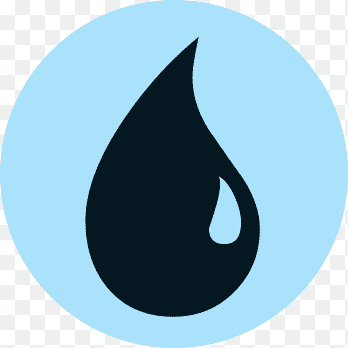

Carta do Dia
Coleção The Hobbit

Temporada finalizada • Resultado final da Liga 4
O pódio oficial da Liga Magic Supermarket
Campeão da Liga 4
Campeão da Liga 4
3º lugar
4º lugar
4º lugar
A Liga 4 terminou com empates em pontos válidos: Bruno Novaes e Magno
dividem o 1º lugar com 36 pontos, e Nagib e Pablo dividem o 4º com 18.
Como a temporada não tinha um critério de desempate definido, as posições empatadas
foram mantidas (dentro de cada empate, os nomes estão em ordem alfabética).
A partir da Liga 5, empates em pontos serão decididos pelos critérios oficiais do
Magic Tournament Rules (Wizards of the Coast), nesta ordem:
OMW% (aproveitamento médio dos adversários),
GW% (percentual de games vencidos) e
OGW% (aproveitamento médio dos adversários em games).
Coleção The Hobbit
| Posição | Jogador | Pontos válidos | Pontos | Campanha | MW / GW / OMWP |
|---|
Na Liga 4, os pontos válidos consideram todos os dias de jogo, descartando o pior resultado de cada jogador.